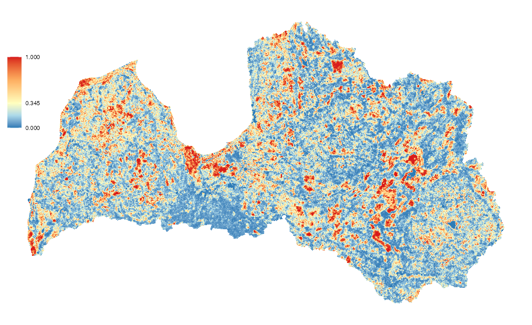
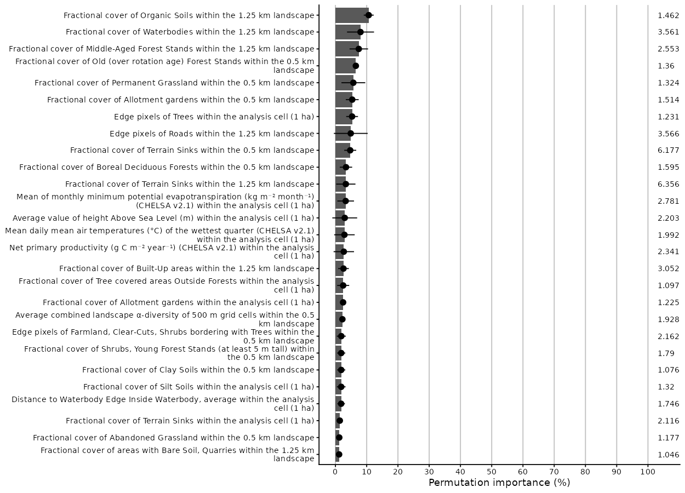
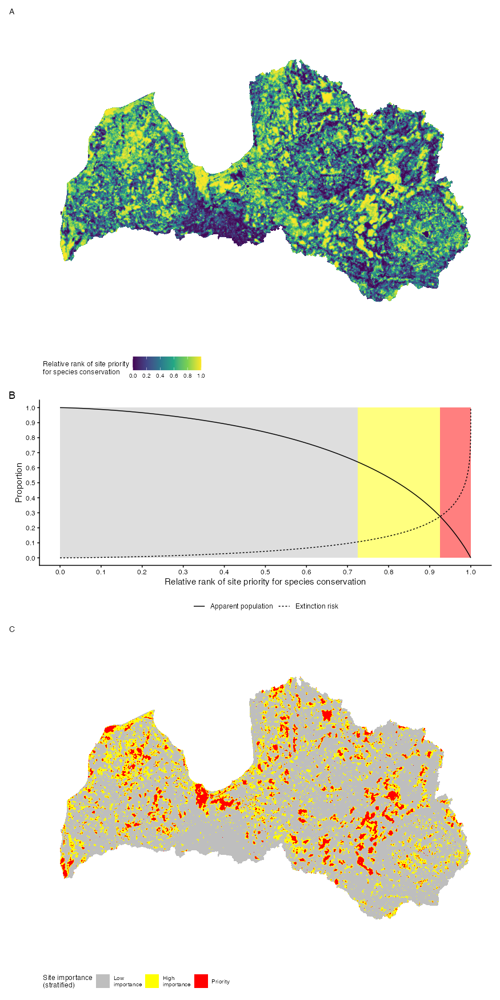

Rana arvalis terrestrial
Summary
Model description
Occurrence and background data were divided into model-training with four block spatial cross-validation data and an independent test set. Sampling-bias/background treatment: Phenology Weighted Target Group. Accumulated LULC change within the 1-ha analysis cell was not evaluated; accumulated LULC change within the home-range radius around the analysis cell was not evaluated.
The final data set contained 160 presence records: 120 for training with four spatial block cross-validation and 40 for independent testing. Training background contained 30001 locations, with 9999 additional independent-test background locations.
Expert assessment scores
- Marginal responses and variable importance score: 2 (limited ecological interpretability)
- Map score: 3 (moderate agreement with known distribution)
- Applicability score: 2 (limited applicability)
Šo sadaļu aizpildām manuāli no ekspertu aptaujām
Statistical evaluation
The final model had a training TSS of 0.401, with a training-derived cloglog threshold of 0.345. Combined training AUC was 0.846 and combined test AUC was 0.68.
Spatial cross-validation
- AUC: 0.7845 ± 0.0514; null models: 0.508 ± 0.0357; z = 7.7385, p < 0.001
- CBI: 0.7857 ± 0.0729; null models: -0.0174 ± 0.158; z = 5.0826, p < 0.001
- OR10: 0.1833 ± 0.1291; null models: 0.2543 ± 0.072; z = -0.9863, p = 0.162
- ORmin: 0.0583 ± 0.0687; null models: 0.0577 ± 0.0473; z = 0.0141, p = 0.506
Independent testing
- TSS: 0.176; sensitivity: 0.425; specificity: 0.751
- AUC: 0.702; null models: 0.4963 ± 0.0741; z = 2.7699, p = 0.003
- CBI: 0.528; null models: -0.0695 ± 0.4504; z = 1.3266, p = 0.092
- OR10: 0.3; null models: 0.2205 ± 0.0966; z = 0.8234, p = 0.795
- ORmin: 0.025; null models: 0.0245 ± 0.0326; z = 0.0154, p = 0.506
Conservation prioritisation summary
The primary priority area covers 7.5% of Latvia and contains 27.5% of the summed habitat suitability (apparent population proxy).
The broader high importance area covers 27.5% of Latvia and contains 63.9% of the summed habitat suitability.
For comparison, the area classified as suitable using the maximum training sensitivity plus specificity habitat-suitability threshold contains 63.9% of the summed continuous habitat suitability.
Habitat suitability

Model thresholds
Threshold values and associated omission rates
| Threshold | Cloglog value | Fractional predicted area | Training omission rate | Test omission rate | P-values |
|---|---|---|---|---|---|
| Minimum training presence | 0.0571934 | 0.8062822 | 0.000 | 0.0000994 | 0 |
| Equal training sensitivity and specificity | 0.3416966 | 0.2249958 | 0.225 | 0.0022867 | 0 |
| Maximum training sensitivity plus specificity | 0.3448788 | 0.2225694 | 0.225 | 0.0022867 | 0 |
| Equal test sensitivity and specificity | 0.2530641 | 0.3150740 | 0.150 | 0.0013919 | 0 |
| Maximum test sensitivity plus specificity | 0.2408735 | 0.3315606 | 0.150 | 0.0012925 | 0 |
Variable importance

Marginal responses
![Marginalised for arithmetic mean response curves illustrating the effect of each ecogeographical variable on the habitat suitability when all the other variables have their arithmetic mean values. The y-axis shows the predicted habitat suitability (cloglog-transformed), while the x-axis shows the standardised (centred and scaled) value of the ecogeographical variable. Dots at a value of 1 on the y-axis illustrate presence locations in the environment (on the x-axis), while dots at a value of 0 illustrate background locations used in modelling. For a full resolution refer to repository: link or online document: link](results/RANARVterrestrialv2b1celi/PicMargResp_RANARVterrestrial.png)
Habitat and conservation associations
![Associations between predicted suitability and: (A) land use land cover classes, (B) Natura 2000 status, (C) stratified EU protected habitat classes, (D) conservation regime, and (E) EU protected habitats. The y-axis show continuous relative suitability index (derivative of Manly’s index of preference). Colours in (C) and (E) correspond to stratified EU protected habitat classes. For classifications composed of multiple individual polygons, polygon-level indices were additionally calculated to show within-category variation. The figures therefore combine category-level estimates (points) with the distributions of polygon-level values (boxplots, where applicable). Labels above and below the panels report, respectively, the percentage of total predicted suitability and the percentage of mapped area represented by each category. For a full resolution refer to repository: link or online document: link](results/RANARVterrestrialv2b1celi/PicAssoc_RANARVterrestrial.png)
Conservation prioritization
